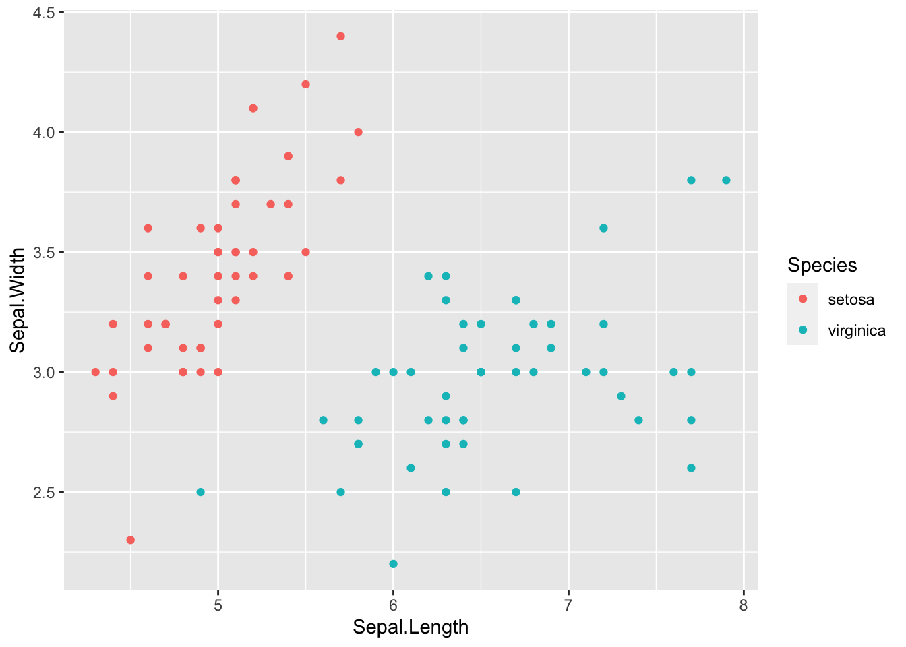

1.3 Bayes classifier
In the previous section, we implicitly assumed that each subject is equally likely to be from any of the \(g\) populations. This is the simplest case but is an unrealistic assumption in practice.
For example, suppose we want to classify photos on the internet as either being a photo of Bill Evans or not Bill Evans. Most photos on the internet are not of Bill Evans, and so we want to take this into account in the classifier, i.e., we want to take the base rate of occurence of each population into account.
Suppose a priori the probability an observation is from population \(k\) is \(\pi_k\), with \[\sum_{k=1}^g \pi_k=1.\] Then given a probability model \(f_k(\mathbf x)\) for observations \(\mathbf x\) from population \(k\), our posterior probability for observation \(\mathbf x\) being from population \(k\) is \[{\mathbb{P}}(y=k \mid \mathbf x) = \frac{f_k(\mathbf x)\pi_k}{\sum_{j=1}^g f_k(\mathbf x)\pi_k}\] by Bayes theorem.
As before, if we assume each population has a multivariate normal distribution, then this simplifies.
Proposition 1.3 If cases in population \(\Pi_k\) have a \(N_p({\boldsymbol{\mu}}_k,\boldsymbol{\Sigma})\) distribution, then the Bayes discriminant rule is \[d(\mathbf x)= \arg\min_{k} \frac{1}{2}(\mathbf x-{\boldsymbol{\mu}}_k)^\top \boldsymbol{\Sigma}^{-1} (\mathbf x-{\boldsymbol{\mu}}_k)- \log \pi_k.\]
Equivalently, if \[\delta_k(\mathbf x) = {\boldsymbol{\mu}}_k^\top \boldsymbol{\Sigma}^{-1} \mathbf x-\frac{1}{2}{\boldsymbol{\mu}}_k^\top \Sigma^{-1} {\boldsymbol{\mu}}_k +\log \pi_k\] then \[d(\mathbf x) = \arg \max \delta_k(\mathbf x).\] I.e. this is a linear discriminant rule.Proof. See the exercises….?
In practice, we may not know the population probabilities \(\pi_k\). If so, we can estimate them from the data using \[\hat{\pi}_k = \frac{n_k}{n}\] and substitute \(\hat{\pi}_k\) for \(\pi_k\) (as well as substituting \(\hat{{\boldsymbol{\mu}}}_k\), \(\widehat{\boldsymbol{\Sigma}}\) etc).
If we set \(\pi_k = \frac{1}{g}\) then the Bayes discriminant rule is the same as the ML discriminant rule. The MASS implementation lda uses the Bayes discriminant rule, but gives you the option of setting \(\pi_k\) if known, but otherwise estimates the class probabilities.
1.3.1 LDA with the Iris data
Let’s consider doing LDA with the iris data. To begin with, lets use just the setosa and virginica species so that we only have \(g=2\) populations. We will also just use the sepal measurements so that \(p=2\). If we plot the data, we can see that the two populations should be easy to classify using just these two measurements:

The sample means and variances for each group are
\[\begin{eqnarray*} \bar{\mathbf x}_s = \begin{pmatrix}5.01 \\3.43 \\\end{pmatrix} &\qquad& \bar{\mathbf x}_v = \begin{pmatrix}6.59 \\2.97 \\\end{pmatrix} \\ \mathbf S_s = \begin{pmatrix}0.124&0.0992 \\0.0992&0.144 \\\end{pmatrix} &\qquad& \mathbf S_v =\begin{pmatrix}0.404&0.0938 \\0.0938&0.104 \\\end{pmatrix} \end{eqnarray*}\] where the \(s\) subscript gives the values for setosa, and \(v\) for virginica.
We have data on \(n=50\) flowers in each population. Hence, \[\begin{eqnarray*} \widehat{\boldsymbol{\Sigma}} &=& \frac{1}{50+50-2} \left(50 \mathbf S_s + 50 \mathbf S_v \right)= \begin{pmatrix}0.27&0.0985 \\0.0985&0.126 \\\end{pmatrix}, \\ \bar{\mathbf x}_s - \bar{\mathbf x}_v &=& \begin{pmatrix}-1.58 \\0.454 \\\end{pmatrix}, \\ \hat{\mathbf h} &=& \frac{1}{2} (\bar{\mathbf x}_s + \bar{\mathbf x}_v) = \begin{pmatrix}5.797 \\3.201 \\\end{pmatrix}, \end{eqnarray*}\] and \[\hat{\mathbf a} = \widehat{\boldsymbol{\Sigma}}^{-1} (\bar{\mathbf x}_s - \bar{\mathbf x}_v) = \begin{pmatrix}5.18&-4.04 \\-4.04&11.1 \\\end{pmatrix} \begin{pmatrix}-1.58 \\0.454 \\\end{pmatrix} = \begin{pmatrix}-10.031 \\11.407 \\\end{pmatrix}.\]
The sample ML discriminant rule allocates a new observation\ \(\mathbf x= (z_1, z_2)^\top\) to \(\Pi_{\mbox{setosa}}\) if and only if \[ \hat{\mathbf a}^\top (\mathbf x- \hat{\mathbf h}) = \begin{pmatrix}-10.031&11.407 \\\end{pmatrix} \begin{pmatrix} z_1 - 5.797 \\ z_2 - 3.201 \end{pmatrix} > 0.\]
If we draw on the line defined by \[\mathbf a^\top (\mathbf x-\mathbf h)=0\] which can be written as \[z_2 = \frac{1}{a_2}(\mathbf a^\top\mathbf h-a_1z_1) = -1.8963517 - -0.8793085 z_1\] we can see this line clearly separates the two species of iris.

For example, if an iris had a sepal length of 5.8 and a sepal width of 2.5 then
\[ \hat{\mathbf a}^\top (\mathbf x- \hat{\mathbf h}) = \begin{pmatrix}-10.031&11.407 \\\end{pmatrix} \begin{pmatrix} 5.8 - 5.797 \\ 2.5 - 3.201 \end{pmatrix} =-8.0267032 < 0,\] and so we would allocate this iris to virginia.
As always, there is an R command to do this work for us. The command is called lda and it is in the MASS R package.
library(MASS)
library(dplyr)
iris2 <- iris %>% filter(Species != "versicolor") %>%
dplyr::select(Sepal.Length, Sepal.Width, Species)
iris.lda1 <- lda(Species ~ ., iris2)
# lda(Species ~ Sepal.Length+Sepal.Width, iris2)
# does the same thing
iris.lda1## Call:
## lda(Species ~ ., data = iris2)
##
## Prior probabilities of groups:
## setosa virginica
## 0.5 0.5
##
## Group means:
## Sepal.Length Sepal.Width
## setosa 5.006 3.428
## virginica 6.588 2.974
##
## Coefficients of linear discriminants:
## LD1
## Sepal.Length 2.208596
## Sepal.Width -2.511742You can see that this has computed the group means, and the lda coefficients. The coefficients are different to the ones we compute for \(\mathbf a\), but have the same ratio, which is all that matters for us.
## [1] -0.8793085## [1] -0.8793085The output also includes the estimate of the prior probabilities….?????????????????????????????????
We can make predictions about new points:
## $class
## [1] virginica
## Levels: setosa versicolor virginica
##
## $posterior
## setosa virginica
## 1 0.0002771946 0.9997228
##
## $x
## LD1
## 1 1.767357and in this case it gives us the
## Warning: package 'mvtnorm' was built under R version 3.6.2##
## Attaching package: 'mvtnorm'## The following objects are masked from 'package:mixtools':
##
## dmvnorm, rmvnorml_set=mvtnorm::dmvnorm(z, mean = xbar_set, sigma = S_set)
l_vir=mvtnorm::dmvnorm(z, mean = xbar_vir, sigma = S_vir)
c(l_set,l_vir)/(l_set+l_vir)## 1 1
## 3.513e-09 1.000e+00Note that we could also
1.3.2 Quadratic Discriminant Analysis (QDA)
We have seen that in the case where the populations all share a common covariance matrix, \(\boldsymbol{\Sigma}\), that the decision boundaries are linear (i.e. hyperplanes). We also saw in example ?? in a one-dimensional example that when the two populations had different variances we found a quadratic decision boundary.
In general, if we allow the variances to differ between populations, so that we model \(\mathbf x\sim N_p(\mu_k, \boldsymbol{\Sigma}_k)\) for population \(k\), then we can no longer ignore the determinant of the covariance matrix in the likelihood (see Equation (1.3)). In this case, the decision rule is \[ d(\mathbf x)=\arg\max_k \left(-\frac{1}{2} \log |\boldsymbol{\Sigma}_k| - \frac{1}{2}(\mathbf x-{\boldsymbol{\mu}}_k)^\top \boldsymbol{\Sigma}_k^{-1} (\mathbf x-{\boldsymbol{\mu}}_k)+\log \pi_k\right). \]
We cannot ignore the quadratic term in \(\mathbf x\) here as it depends upon the population indicator \(k\). Thus in this case we get a quadratic decision boundary rather than a linear one.
The qda function in the MASS package implements quadratic discriminant analysis…..
But you can often get similar result by just including quadratic terms in LDA……..
EXAMPLE WITH IRIS???????